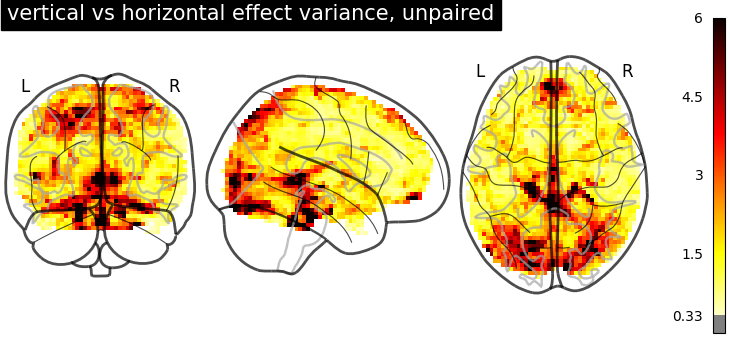
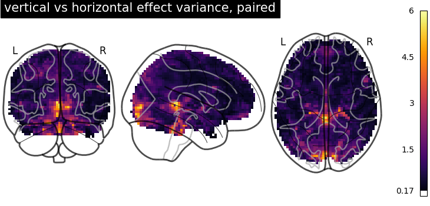
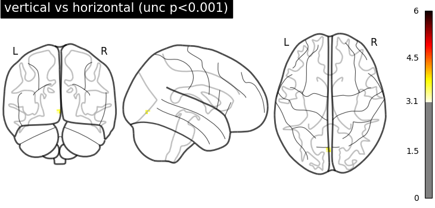

Note
Click here to download the full example code or to run this example in your browser via Binder
9.6.6. Second-level fMRI model: two-sample test, unpaired and paired¶
Full step-by-step example of fitting a GLM to perform a second level analysis in experimental data and visualizing the results
More specifically:
A sample of n=16 visual activity fMRIs are downloaded.
2. An unpaired, two-sample t-test is applied to the brain maps in order to see the effect of the contrast difference across subjects.
3. A paired, two-sample t-test is applied to the brain maps in order to see the effect of the contrast difference across subjects, considering subject intercepts
The contrast is between responses to retinotopically distinct vertical versus horizontal checkerboards. At the individual level, these stimuli are sometimes used to map the borders of primary visual areas. At the group level, such a mapping is not possible. Yet, we may observe some significant effects in these areas.
import pandas as pd
from nilearn import plotting
from nilearn.datasets import fetch_localizer_contrasts
import matplotlib.pyplot as plt
9.6.6.1. Fetch dataset¶
We download a list of left vs right button press contrasts from a localizer dataset.
n_subjects = 16
sample_vertical = fetch_localizer_contrasts(
["vertical checkerboard"], n_subjects,
get_tmaps=True, legacy_format=False
)
sample_horizontal = fetch_localizer_contrasts(
["horizontal checkerboard"], n_subjects,
get_tmaps=True, legacy_format=False
)
# Implicitly, there is a one-to-one correspondence between the two samples:
# the first image of both samples comes from subject S1, the second from subject S2 etc.
9.6.6.2. Estimate second level models¶
We define the input maps and the design matrix for the second level model and fit it.
second_level_input = sample_vertical['cmaps'] + sample_horizontal['cmaps']
Next, we model the effect of conditions (sample 1 vs sample 2).
import numpy as np
condition_effect = np.hstack(([1] * n_subjects, [- 1] * n_subjects))
The design matrix for the unpaired test doesn’t need any more columns For the paired test, we include an intercept for each subject.
subject_effect = np.vstack((np.eye(n_subjects), np.eye(n_subjects)))
subjects = [f'S{i:02d}' for i in range(1, n_subjects + 1)]
We then assemble those into design matrices
unpaired_design_matrix = pd.DataFrame(
condition_effect[:, np.newaxis],
columns=['vertical vs horizontal'])
paired_design_matrix = pd.DataFrame(
np.hstack((condition_effect[:, np.newaxis], subject_effect)),
columns=['vertical vs horizontal'] + subjects)
and plot the designs.
from nilearn.plotting import plot_design_matrix
_, (ax_unpaired, ax_paired) = plt.subplots(1,2, gridspec_kw={'width_ratios': [1, 17]})
plot_design_matrix(unpaired_design_matrix, rescale=False, ax=ax_unpaired)
plot_design_matrix(paired_design_matrix, rescale=False, ax=ax_paired)
ax_unpaired.set_title('unpaired design', fontsize=12)
ax_paired.set_title('paired design', fontsize=12)
plt.tight_layout()
plotting.show()
We specify the analysis models and fit them.
from nilearn.glm.second_level import SecondLevelModel
second_level_model_unpaired = SecondLevelModel().fit(
second_level_input, design_matrix=unpaired_design_matrix)
second_level_model_paired = SecondLevelModel().fit(
second_level_input, design_matrix=paired_design_matrix)
Estimating the contrast is simple. To do so, we provide the column name of the design matrix. The argument ‘output_type’ is set to return all available outputs so that we can compare differences in the effect size, variance, and z-score.
stat_maps_unpaired = second_level_model_unpaired.compute_contrast(
'vertical vs horizontal',
output_type='all')
stat_maps_paired = second_level_model_paired.compute_contrast(
'vertical vs horizontal',
output_type='all')
9.6.6.3. Plot the results¶
The two effect_size images are essentially identical
(stat_maps_unpaired['effect_size'].get_fdata()
- stat_maps_paired['effect_size'].get_fdata()).max()
Out:
9.992007221626409e-16
But the variance in the unpaired image is larger.
plotting.plot_glass_brain(
stat_maps_unpaired['effect_variance'], colorbar=True, vmin=0, vmax=6,
title='vertical vs horizontal effect variance, unpaired')
plotting.plot_glass_brain(
stat_maps_paired['effect_variance'], colorbar=True, vmin=0, vmax=6,
title='vertical vs horizontal effect variance, paired')
plotting.show()
- 
- 
Together, this makes the z_scores from the paired test larger. We threshold the second level contrast and plot it.
threshold = 3.1 # corresponds to p < .001, uncorrected
display = plotting.plot_glass_brain(
stat_maps_unpaired['z_score'], threshold=threshold, colorbar=True, plot_abs=False,
title='vertical vs horizontal (unc p<0.001)', vmin=0, vmax=6)
display = plotting.plot_glass_brain(
stat_maps_paired['z_score'], threshold=threshold, colorbar=True, plot_abs=False,
title='vertical vs horizontal (unc p<0.001)', vmin=0, vmax=6)
plotting.show()
- 
Unsurprisingly, we see activity in the primary visual cortex, both positive and negative.
Total running time of the script: ( 0 minutes 13.604 seconds)
Estimated memory usage: 9 MB